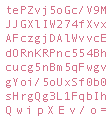
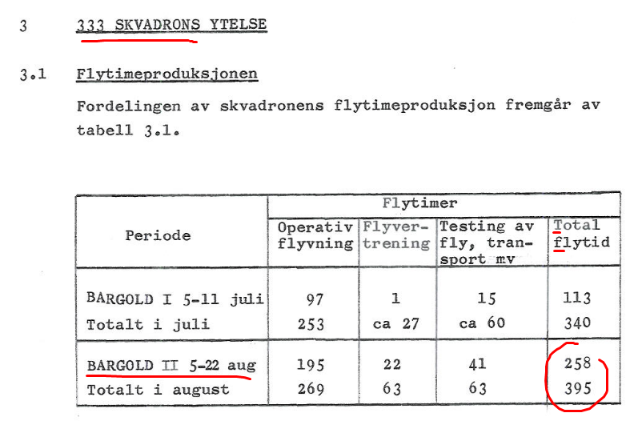
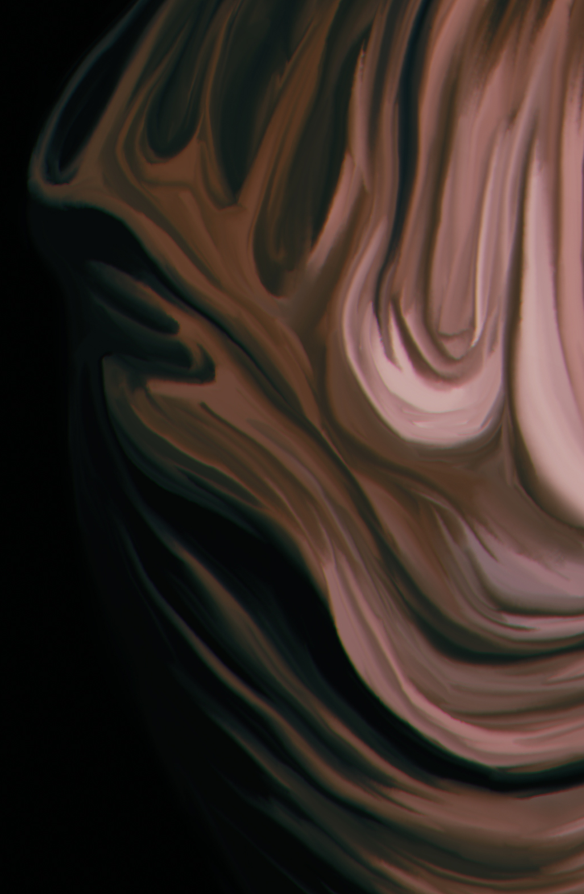
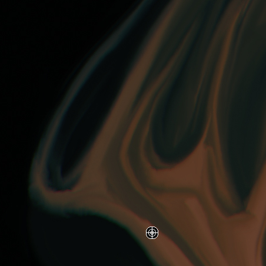
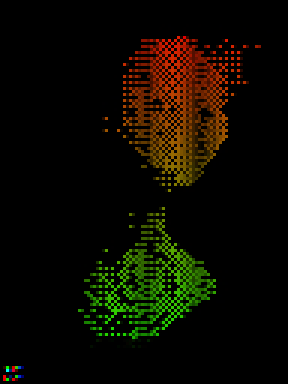
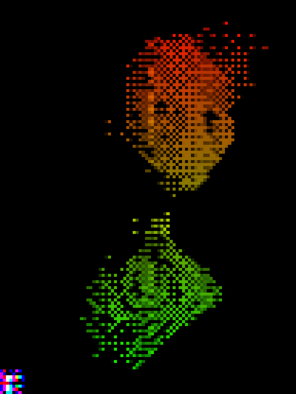
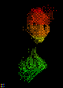

fauux hosted an ARG, and this is an attempt to explain everything we found
The previous iteration of fauux's front page can be found here.
So, it's all over now. Oh yeah, I was the first to finish! Yay! It was a ton of fun and I loved working and being frustrated 24/7 with the others in the Discord server for the last couple of days, かんぱい
Gotta say though, this would have taken way longer to figure out hadn't it been for the hints fauux gave us (much appreciated). I feel like this wasn't the usual kind of ARG where it's like "here's the thing, good luck" and I think that's part of what made it more fun. Oh, fauux was also really cool to chat with.
Also, we came to the conclusion that the prize has to be rethought. So now everyone gets to have their name proudly displayed on the front page of the Neocities site.
Thanks again to everyone that was part of this! Y'all were awesome 🎉🎉🎉
They're actually morse code, like a bunch of other stuff. The bottom line is the dots, top is dashes. Also, it's linear. Kudos to mace486 for decoding them.
/16c.gif （┏） → "uren, luren, himmelturen"
/16c.gif （┛） → "god is here, rodent vein"
The morse parts of 16c.gif can also be found in the /fauux.mov video file.
256bit.
Despite that, it seems that the site fauux used to encrypt the messages allows for them to be of any length, so yeah... weird! That
means we just got lucky with the morse messages coincidentally being 24 characters long, lol.
The first encrypted string, found at the bottom of the latest russian blog entry:
tePZvj5oGc/V9MJJGXlIW274fXvxAFczgjDAlWvvcEdORnKRPnc554Bhcucg5nBm5qFwgvgYoi/5oUxSf0b0sHrgQg3L1FqbIhQwipXEv/o=
(Oopsie, I transcribed it wrong the first time around, should be all good now!)
Do not share this message.
Send "watch?v=b4R7F9mFoaM" to fauux01@gmail.com
Also, please don't do what it says. It doesn't mean anything anymore lol
The second encrypted string, found by going to /2020.html and decoding the
morse code in the audio file:
yHZDTTbggonWfFECcW4s2DR7BUq/lzkR7OngRItPXTigUazVXMYpFiyxzud7jPd+byhS1IhVCnFDOO0YQ2FyMg==
"IR-S-20"
Skvadron 333
Bargold II 5-22 aug -> T f
IR-S-20.pdf has been discovered by
jackomix through a targeted Google search. However, kryptonaut
seems to have also found this paper beforehand, but wasn't sure of whether it was legit or not (thanks for the
OCR version though!)
On the 31st page of this paper, a table can be found. This page contains pretty much everything else that was
in the message, such as 333 SKVADRONS, BARGOLD II 5-22 aug, and Total flytid. At the
intersection of BARGOLD and Total flytid the numbers 258 and 395 can be seen. If you
multiply these you'll get 101910, which happens to be the password for 2020.pdf
 101910 (see above).
The document contains a single distorted image (pic.1). Someone had already accessed it through means other than the password and
the result was the same.
The image scales down to 258x395, same numbers as in the Norwegian paper, this ties in with what I'm about to
say next.
What you have to do with this shit is import it into Photoshop or something, get your rulers out and set them to pixels.
Now make your way to the pixel located at X 258 (horizontal) and Y 395 (vertical) (pic.2), grab
the Eyedropper tool and select it. It's #603c29.
Guess what you have to do with this color's hex code. Come on, guess. Alright, that's the key to the first AES-encrypted string, LOL. Decrypt that shit and you're finally done, you win! :D
By the way, if you're curious about what this weird ass blob is part of, you can see the full image here:
Poster_v3.jpg (warning: HUGE photo)
It's a really cool poster, fauux himself said that this is all there is to it, so I guess it's ok to put it on here.
A video file that contains the morse code from 16c.gif, some other dots occasionally fly by in other areas of the
video. kryptonaut has stacked every frame of the video and obtained
the following (1, 2). A guy called Indy has also attempted this (3). fauux himself was also kind enough to provide the
original too (4).
  
What this is supposed to be is a useless decoy lol. This is also what that stuff in the pdf is part of. You can see the full image here: Poster_v3.jpg (warning: HUGE photo)
The morse gifs in this video are the same ones as in 16c.gif
You can find every single frame of the fauux.mov file here: fauuxmov_frames.7z
This used to be a different lain gif that had a morse code message and two other meaningless decoys in it.
The morse code was flipped 180 degrees around.
Again, thanks to mace486 for decoding them, you can also see screenshots of all this stuff
on his site.
-- . -- -... . .-. / .- .--. .--. .-.. .. -.-. .- - .. --- -.
MEMBER APPLICATION
(I believe this was meant to officially enlist anyone who posted it as an applicant)
.-- . / .- .-. . / .-.. --- --- -.- .. -. --. / ..-. --- .-. / -. . .-- / -- . -- -... . .-. ... .-.-.-
WE ARE LOOKING FOR NEW MEMBERS.
(I'm pretty sure the last character is meant to be a dot, not a katakana "sa")